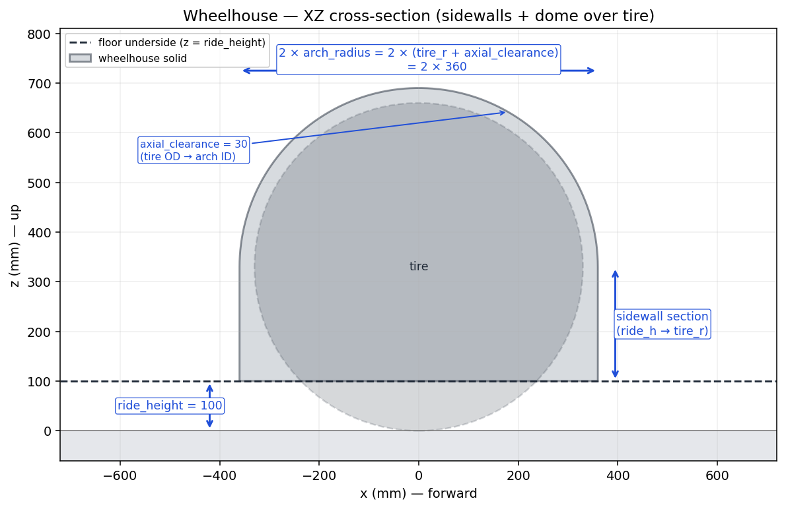
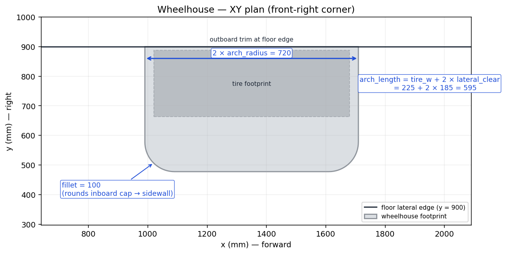

Builder 4 of 6
Wheelhouse Builder
Single closed arch solid that wraps one wheel from above: vertical sidewalls from the floor up to the widest tire point, then a semicircular dome over the top. Optionally rounded with a 3D tangent fillet on the inboard cap, and trimmed at the floor’s lateral edge.
Overview
The wheelhouse is built as a closed solid first — even in the zero-thickness surface mode of the underbody. That’s deliberate: the same solid is used twice.
- As a cutter for the floor surface, so the floor’s edge picks up the wheelhouse’s fillet exactly (no holes or gaps).
- As a source of outer faces: the bottom floor chord and the outboard end cap are dropped, leaving only the dome + sidewalls + inboard cap + fillet faces. Those become the final wheelhouse surfaces in the underbody Compound.
XZ cross-section

Cross-section through one wheelhouse along the wheel’s spin axis. The sidewalls are tangent to the dome atz = tire_radius, so
the cross-section reads as one smooth curve there. The floor chord
(the bottom of the solid) sits at z = ride_height and is
cut away when the floor surface is computed downstream.
XY plan view

Plan footprint of one wheelhouse (front-right corner shown). Rounded corners on the inboard edge are the projection of the 3D fillet — it wraps around the entire upper outline of the inboard cap (dome + both sidewalls). The outboard edge is trimmed at the floor’s lateral perimeter so the wheelhouse never sticks past the floor’s plan outline.Parameter reference
Geometry & placement
| Parameter | Units | Meaning |
|---|---|---|
axle_x | mm | X (forward) coordinate of the wheel center. |
y_track | mm | Y (right) coordinate of the wheel center. |
side | str | "left" or "right" — picks which face is inboard. |
tire_radius_mm | mm | Tire OD / 2 (the wheelhouse wraps this much plus the clearance). |
tire_width_mm | mm | Tire axial width (= section_width_mm). |
Clearances & fillet
| Parameter | Default | Units | Meaning |
|---|---|---|---|
radial_clearance_mm | 30 | mm | Gap between tire OD and arch ID in the wheel's plane of
rotation (i.e. X-Z viewed from the side). Adds to the
arch's radius — the arch is taller and longer
front-to-back than the tire by this amount. (Used to be
named axial_clearance_mm; that was a misnomer.) |
lateral_clearance_mm | 35 | mm | Extra Y per side (includes steering clearance on a front wheel). |
thickness_mm | 6 | mm | Shell thickness (used only in the solid floor mode; surface mode is zero thickness). |
fillet_mm | 100 | mm | Tangent fillet radius on the inboard cap’s upper outline. 0 disables. |
Underbody reference
| Parameter | Default | Units | Meaning |
|---|---|---|---|
ride_height_mm | 100 | mm | Z of the flat floor underside. The wheelhouse floor chord sits here. |
floor_edge_y | 900 | mm | Signed Y of the floor’s lateral edge on this side
(± floor_width / 2). The outboard trim uses this. |
Derived values
| Property | Formula |
|---|---|
arch_radius_mm | tire_radius_mm + radial_clearance_mm |
arch_length_mm | tire_width_mm + 2 × lateral_clearance_mm |
Usage
from paramub import WheelhouseSpec, build_wheelhouse_solid, extract_wheelhouse_surfaces
from paramub.builders.floor import FloorSpec, build_below_cropper
floor_spec = FloorSpec(floor_x_min=-2150, floor_x_max=2200,
diffuser_start_x_mm=-1350)
wh_spec = WheelhouseSpec(
axle_x=1350, y_track=775, side="right",
tire_radius_mm=330, tire_width_mm=225,
lateral_clearance_mm=185, # base + 150 mm steering clearance
fillet_mm=100,
floor_edge_y=900,
)
solid = build_wheelhouse_solid(wh_spec)
below = build_below_cropper(floor_spec).val()
faces = extract_wheelhouse_surfaces(solid, wh_spec, below_cropper=below)
Implementation notes
Why a closed solid first? Earlier iterations cut the
floor with a plain cylinder (no fillet) — that left a gap between the
floor edge and the filleted wheelhouse face. Cutting the floor with the
filleted wheelhouse solid forces the floor’s edge onto the
fillet boundary, so the two pieces share the exact same curve.
Fillet wraps the whole inboard cap. The fillet runs
continuously from the floor, up one sidewall, around the dome, and back
down to the floor on the other side. The sidewall portion of the fillet
terminates at
z = ride_height, where the floor cut trims it
to a clean edge downstream.
Outboard trim. If
y_track + arch_length/2
would push the wheelhouse past the floor’s lateral perimeter, the
outboard end is cut off at floor_edge_y with a half-space.
No-op when the wheelhouse already fits inside the floor plan.